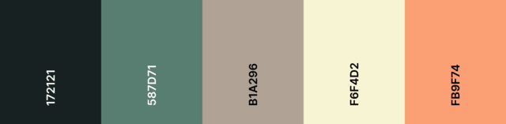
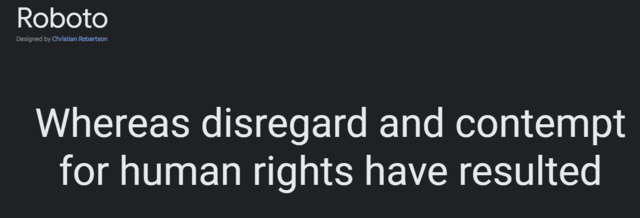

Design
Color Schema
For the color schema, I have determined that this series of greens and earthy tones is the look I would like to cultivate. The light salmon will be utilized for buttons like outside the nav and is incorporated into this nave to demonstrate the contrast between it and the shades of green. The two greens will be used for headers and footers or potentially icons depending on how this site further gets planned visually. The yellowish white is there to draw your attention to the body content and contrast any whitespace incorporated as is appropraite.
Typography
The site will feature the sans-serif Google font Roboto in order to incorporate a laid-back elegance in the font that provides easy readability and does not distract from the content of the page that is also featured. it is also featured in this current demo site.